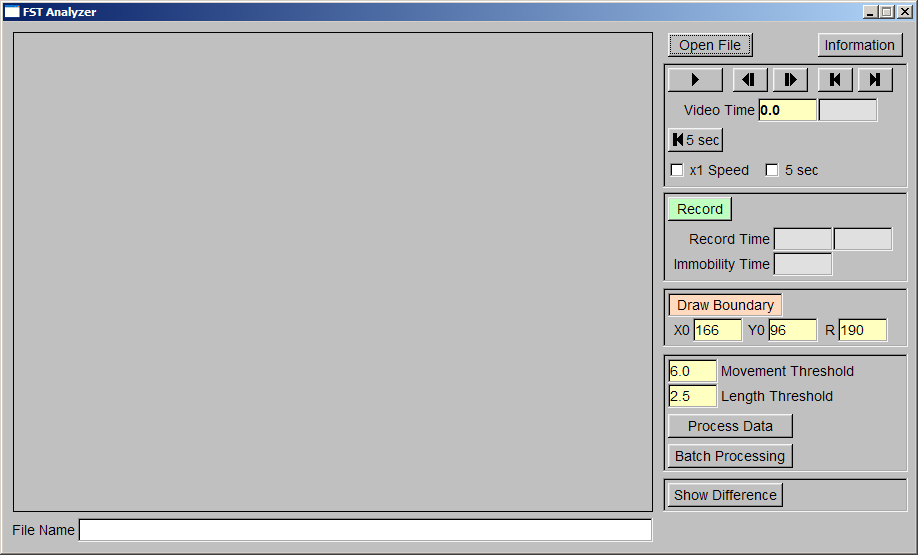
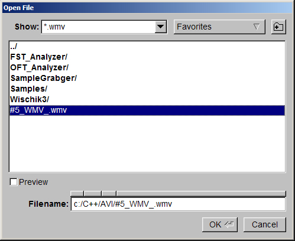
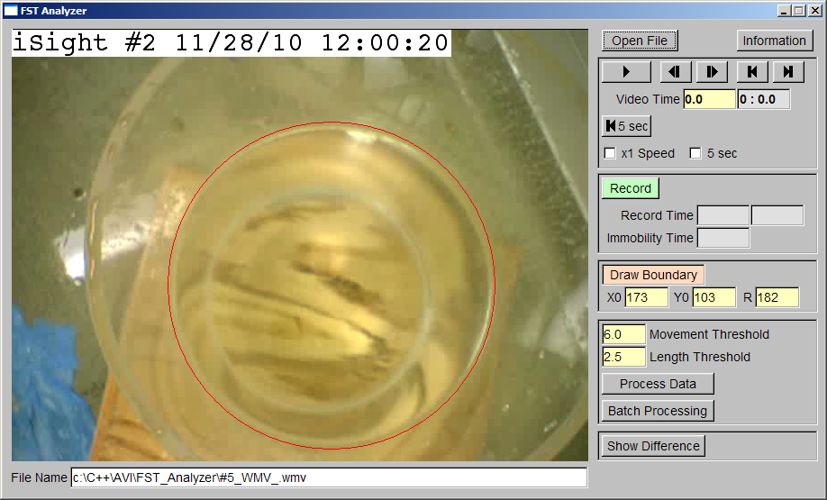
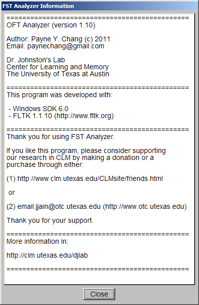
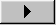
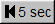
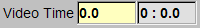
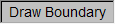
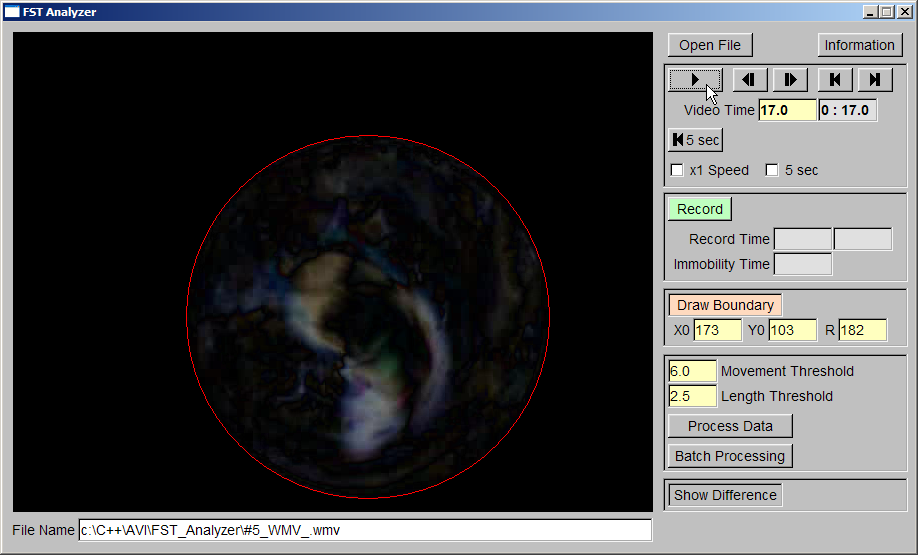

.
.This program is developed for the analysis of modified Forced Swim Test (FST) video.
Author: Payne Y. Chang (c) 2011
Email: paynechang@gmail.com
Dr. Daniel Johnston's Lab
Center for Learning and Memory
The University of Texas at Austin
Thank you for your interest in FSTAnalyzer. If you like this program, please consider supporting our research in CLM by making a donation or a purchase through either:
Thank you for your support.
More information in: http://clm.utexas.edu/djlab
The development environment is described as following:
The tested video format is described as following:
Available files
This is the user interface when you start FSTAnalyzer.

To quit FSTAnalyzer, press "Esc" button in your keyboard.
To open a file:

After opening the video file, FSTAnalyzer will show the first frame in the video window.
The file name will be displayed in the "File Name" box.

To show "FSTAnalyzer Information" window, click "Information" button.
You need to close this window before you do analysis.

To play the video, click  .
To stop playing the video, click again.
FSTAnalyzer will display and examine the frame every 0.1 second (the video time).
With default settings, FSTAnalyzer will try to play the video as fast as possible.
To play the video at x1 speed, check "x1 Speed".
To play the video for 5 seconds, check "5 sec" and click .
To step back for 5 seconds, click  .
To step back one frame, click .
To step forward one frame, click
.
To go to the first frame, click .
To go to the last frame, click .
The elapsed time will be displayed in "Video Time" boxes.

The left yellow box displays the time in seconds.
The right gray box displays the time in "min : sec".
You can go to a specific frame by left-click inside the yellow box and drag to the left to go backward and to the right to go forward.
When

is checked, you will see a blue or red circle.
The area inside the blue or red circle is the examine area.
When the movement is above the threshold, the circle is red.
When the movement is below the threshold, the circle is blue.
The movement detection will be discussed shortly.
X0 displays the x coordinate (in pixels) of the left boundary.
Y0 displays the y coordinate (in pixels) of the top boundary.
R displays the radius (in pixels) of the examine area.
To move the examine area horizontally, left-click X0 box and drag to the left (the area moves to the left) or to the right (the area moves to the right).
To move the examine area vertically, left-click Y0 box and drag to the left (the area moves to the top) or to the right (the area moves to the bottom).
Left-click R box and drag to the left to reduce the radius.
Left-click R box and drag to the right to increase the radius.
FSTAnalyzer analyzes the difference from frame to frame.
To see the difference, click "Show Difference" button.
The area outside the examine area is always black and not analyzed.

FSTAnalyzer calculates the average difference in the examine area (difference per pixel).
If the average difference is above the "Movement Threshold", the circle turns red and it indicates the animal is active for 0.1 second.
If the average difference is below the "Movement Threshold", the circle turns blue and it indicates the animal is immobile for 0.1 second.
Within 5 seconds, if the summation of active time is longer than the "Length Threshold", FSTAnalyzer considers the animal is active in this
five second period.
If the summation of active time is shorter than the "Length Threshold", FSTAnalyzer considers the animal is immobile in this five second period.
To change "Movement Threshold", left-click "Movement Threshold" box and drag to the left to reduce the threshold and drag to the right
to increase the threshold.
To change "Length Threshold", left-click "Length Threshold" box and drag to the left to reduce the threshold and drag to the right
to increase the threshold.
If you want to evaluate the immobility time with different threshold settings, you don't need to repeat the "Record" procedure given you already have the movement index file.
To re-evaluate one video:
To re-evaluate several videos: